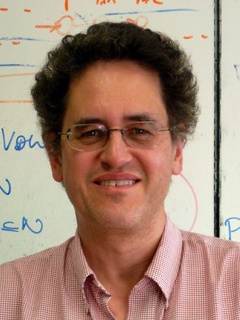
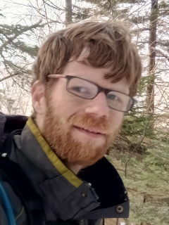
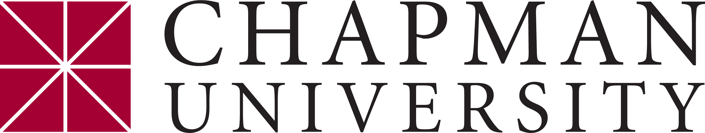

Fourth Symposium on Compositional Structures (SYCO 4)Chapman University, California, USA |
The Symposium on Compositional Structures is a new interdisciplinary series of meetings aiming to support the growing community of researchers interested in the phenomenon of compositionality, from both applied and abstract perspectives, and in particular where category theory serves as a unifying common language. We welcome submissions from researchers across computer science, mathematics, physics, philosophy, and beyond, with the aim of fostering friendly discussion, disseminating new ideas, and spreading knowledge between fields. Submission is encouraged for both mature research and work in progress, and by both established academics and junior researchers, including students.
Submission is easy, with no format requirements or page restrictions. The meeting does not have proceedings, so work can be submitted even if it has been submitted or published elsewhere. You could submit work-in-progress, or a recently completed paper, or even a PhD or Masters thesis.
While no list of topics could be exhaustive, SYCO welcomes submissions with a compositional focus related to any of the following areas, in particular from the perspective of category theory:
- logical methods in computer science, including classical and quantum programming, type theory, concurrency, natural language processing and machine learning;
- graphical calculi, including string diagrams, Petri nets and reaction networks;
- languages and frameworks, including process algebras, proof nets, type theory and game semantics;
- abstract algebra and pure category theory, including monoidal category theory, higher category theory, operads, polygraphs, and relationships to homotopy theory;
- quantum algebra, including quantum computation and representation theory;
- tools and techniques, including rewriting, formal proofs and proof assistants, and game theory;
- industrial applications, including case studies and real-world problem descriptions.
This new series aims to bring together the communities behind many previous successful events which have taken place over the last decade, including Categories, Logic and Physics, Categories, Logic and Physics (Scotland), Higher-Dimensional Rewriting and Applications, String Diagrams in Computational, Logic and Physics, Applied Category Theory, Simons Workshop on Compositionality, the Yorkshire and Midlands Category Theory Seminar, and the Peripatetic Seminar in Sheaves and Logic.
This event follows SYCO 1 in Birmingham, SYCO 2 in Strathclyde, and SYCO 3 in Oxford.
Invited speakers
|  |  |  |
| John Baez | Tobias Fritz | Nina Otter |
| Department of Mathematics University of California, Riverside |
Perimeter Institute for Theoretical Physics |
Department of Mathematics University of California, Los Angeles |
| Props in Network Theory | Categorical Probability: Results and Challenges |
A Unified Framework for Equivalences in Social Networks |
Important dates
All deadlines are 23:59 anywhere-on-earth on the given dates.
Submission deadline: Wednesday 24 April 2019Author notification: Wednesday 1 May 2019Travel support application deadline: Wednesday 8 May 2019- Registration deadline: To be announced
- Symposium dates: Wednesday 22 and Thursday 23 May 2019
Schedule
| Time | Wednesday 22 May | Thursday 23 May |
|---|---|---|
| 9:30–10:00 | Nina Otter, "A Unified Framework for Equivalences in Social Networks" (invited talk) | |
| 10:00–10:30 | ||
| 10:30–11:00 | REGISTRATION | Kohei Kishida, Soroush Rafiee Rad, Joshua Sack and Shengyang Zhong, "Categorical Equivalence between Orthocomplemented Quantales and Complete Orthomodular Lattices" |
| 11:00–11:30 | BREAK | |
| 11:30–12:00 | John Baez, "Props in Network Theory" (invited talk) | Cole Comfort, "Circuit Relations for Real Stabilizers: Towards TOF+H" |
| 12:00–12:30 | Owen Biesel, "Duality for Algebras of the Connected Planar Wiring Diagrams Operad" | |
| 12:30–13:00 | Jade Master, "Generalized Petri Nets" | Joe Moeller and Christina Vasilakopoulou, "Monoidal Grothendieck Construction" |
| 13:00–13:30 | LUNCH | LUNCH |
| 13:30–14:00 | ||
| 14:00–14:30 | Christian Williams and John Baez, "Enriched Lawvere Theories for Operational Semantics" | Tobias Fritz, "Categorical Probability: Results and Challenges" (invited talk) |
| 14:30–15:00 | Kenny Courser and John Baez, "Structured Cospans" | |
| 15:00–15:30 | Daniel Cicala, "Rewriting Structured Cospans" | Harsh Beohar and Sebastian Küpper, "Bisimulation Maps in Presheaf Categories" |
| 15:30–16:00 | BREAK | BREAK |
| 16:00–16:30 | Samuel Balco and Alexander Kurz, "Nominal String Diagrams" | Benjamin MacAdam, Jonathan Gallagher and Rory Lucyshyn-Wright, "Scalars in Tangent Categories" |
| 16:30–17:00 | Jeffrey Morton, "2-Group Actions and Double Categories" | Jonathan Gallagher, Benjamin MacAdam and Geoff Cruttwell, "Towards Formalizing and Extending Differential Programming via Tangent Categories" |
| 17:00–17:30 | Michael Shulman, "All (∞,1)-Toposes Have Strict Univalent Universes" | David Sprunger and Shin-Ya Katsumata, "Differential Categories, Recurrent Neural Networks, and Machine Learning" |
| 17:30–18:30 | DRINKS RECEPTION |
Registration
Please register by filling in the registration form. There is no registration fee, but please register so that we can order the right amount of catering, and give you a badge.
Local information
The local organizer is Alexander Kurz (akurz@chapman.edu).
Venue. The meeting will take place at Chapman University, Beckman Hall 101.
Accommodation. The Ayres Hotel Orange will hold 30 rooms until May 6 at the Chapman rate of $139 per night (follow this link for the rate) including breakfast and shuttle to Chapman (the hotel is close by car but not really walking distance). If you are willing to share a house and/or are short of funds to pay for accommodation there may be a small number of rooms available in private accommodation (contact akurz@chapman.edu).
Airports. The nearest international airport is Los Angeles (LAX), approximately one hour by Uber, maybe two depending on traffic. There are also shuttle services from the airport which are cheaper if you travel alone but are also less convenient. The closest airport is John Wayne Airport in Santa Ana (SNA), just 20 min by car from campus.
Sponsorship
We are pleased to acknowledge financial support from Chapman University.
|  |
Deferral
The intention is for SYCO to be a community meeting, where people have enough time to explain their ideas, and with a friendly and non-competitive atmosphere. To encourage this, in the event that more submissions are received of an acceptable standard than can be accommodated in the timetable, the programme committee may choose to defer some submissions to a future meeting, rather than reject them. This would be done based largely on submission order, giving an incentive for early submission, but would also take into account other requirements, such as ensuring a broad and inclusive scientific programme. Deferred submissions can then be re-submitted to any future SYCO meeting, where they will be prioritised for inclusion in the programme, and where they will not need to be re-reviewed. Meetings are held sufficiently frequently to avoid a backlog of deferred papers.
Submissions
Submission is now closed.
Submissions can be made by EasyChair at the following link:
Submissions should present research results in sufficient detail to allow them to be properly considered by members of the programme committee, who will assess their interest to the SYCO community. We encourage the submission of work in progress, as well as mature results. There are no proceedings, so work can be submitted even if it has been previously published, or has been submitted for consideration elsewhere. There is no specific formatting requirement, and no page limit, although for long submissions authors should be aware that reviewers will not be able to read the entire document in detail. Think creatively—you could submit a recent paper, draft notes of a project in progress, or even a recent Masters or PhD thesis.
If you have a submission which was deferred from a previous SYCO meeting, it will not automatically be considered for SYCO 4; you still need to submit it again through EasyChair. Such a submission will be prioritised for inclusion in the SYCO 4 programme. When submitting, append the words "DEFERRED FROM SYCO X" to the title of your paper, replacing "X" with the appropriate meeting number. There is no need to attach any documents.
Travel support
Application is now closed.
Some funding is available to cover travel and subsistence costs, with a priority for students and junior researchers. To apply for this funding, please contact the local organizer Alexander Kurz (akurz@chapman.edu) with subject line "SYCO 4 funding request" by Wednesday, 8 May, with a short statement of your current status, travel costs, and funding required.
Programme committee
- Miriam Backens, University of Oxford
- Ross Duncan, University of Strathclyde and Cambridge Quantum Computing
- Brendan Fong, Massachusetts Institute of Technology
- Tobias Fritz, Perimeter Institute for Theoretical Physics
- Stefano Gogioso, University of Oxford
- Amar Hadzihasanovic, Kyoto University
- Chris Heunen, University of Edinburgh
- Dominic Horsman, University of Grenoble
- Martti Karvonen, University of Edinburgh
- Kohei Kishida, Dalhousie University (chair)
- Aleks Kissinger, Radboud University Nijmegen
- Andre Kornell, University of California, Davis
- Alexander Kurz, Chapman University
- Martha Lewis, University of Amsterdam
- Samuel Mimram, École Polytechnique
- Benjamin Musto, University of Oxford
- Nina Otter, University of California, Los Angeles
- Simona Paoli, University of Leicester
- Dorette Pronk, Dalhousie University
- Mehrnoosh Sadrzadeh, Queen Mary
- Pawel Sobocinski, University of Southampton
- Joshua Tan, University of Oxford
- Sean Tull, University of Oxford
- Dominic Verdon, University of Bristol
- Jamie Vicary, University of Birmingham and University of Oxford
- Maaike Zwart, University of Oxford
Steering committee
The symposium is managed by the following people. If you have a general question about SYCO, or if you want to propose to host a future version, please get in touch with a member of the steering committee.- Ross Duncan, University of Strathclyde
- Chris Heunen, University of Edinburgh
- Dominic Horsman, University of Grenoble
- Aleks Kissinger, Radboud University Nijmegen
- Samuel Mimram, École Polytechnique
- Simona Paoli, University of Leicester
- Mehrnoosh Sadrzadeh, Queen Mary
- Pawel Sobocinski, University of Southampton
- Jamie Vicary, University of Birmingham and University of Oxford